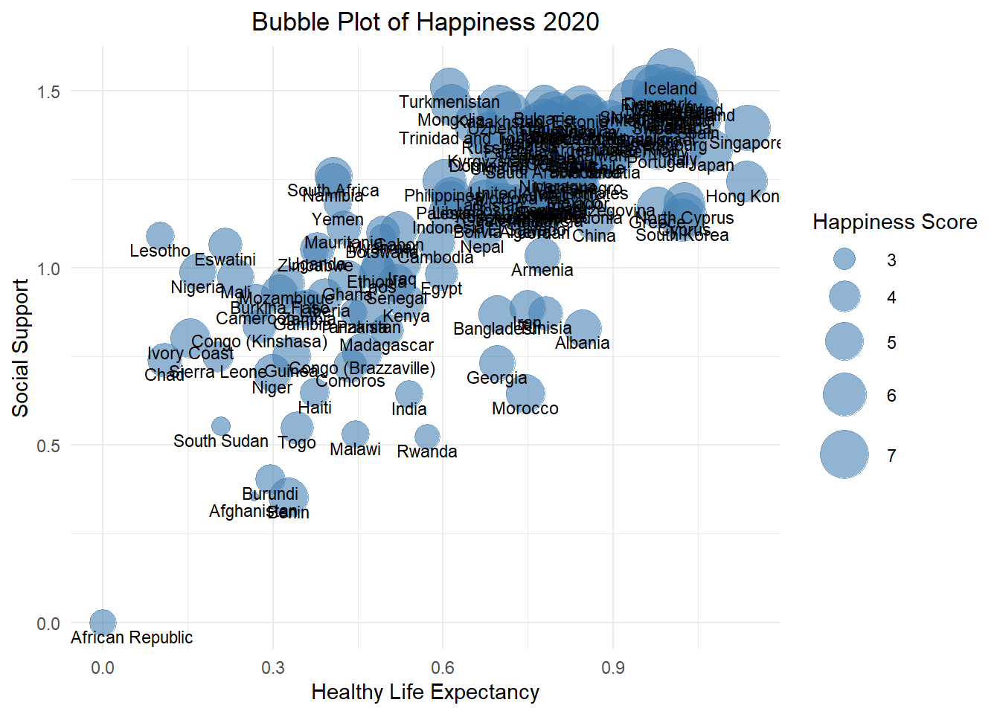

---
title: "Project 1: World Happiness"
format:
html:
number-sections: false
pdf:
number-sections: false
---
# Goals
Based on the global happiness data from the years 2017, 2018, 2019, and 2020, we are exploring these questions:
1. What are the top 10 happiest countries in the most recent year available?
2. How has the happiness score changed over the 4 years for China, India, USA, Indonesia, Japan, and Russia?
3. Which countries have consistently ranked as the top 10 happiest countries across the 4 years?
4. Is there a correlation between GDP per capita and happiness score among countries? Does it differ by year?
5. Based on the 2020 data, how does the distribution of happiness scores vary across different regions of the world?
6. Based on the 2020 data, what is the relationship between social support and life expectancy in terms of their impact on happiness?
7. How does global happiness look when graphed on a treemap?
8. How does global happiness look on the map?
```{r, echo = FALSE, message = FALSE, warning = FALSE}
setwd("D:/Programs/Stuff/School/Data Visualization/Projects")
happy_2017 = read.csv("World Happiness - 2017 Report.csv")
happy_2017$Score <- as.numeric(happy_2017$Score)
happy_2017$GDP.per.capita <- as.numeric(happy_2017$GDP.per.capita)
happy_2018 = read.csv("World Happiness - 2018 Report.csv")
happy_2019 = read.csv("World Happiness - 2019 Report.csv")
happy_2020 = read.csv("World Happiness - 2020 Report.csv")
happy_2017$Year = 2017
happy_2018$Year = 2018
happy_2019$Year = 2019
happy_2020$Year = 2020
library(countrycode)
happy_2017$iso3 <- countrycode(happy_2017$Country, origin = 'country.name', destination = 'iso3c')
happy_2018$iso3 <- countrycode(happy_2018$Country, origin = 'country.name', destination = 'iso3c')
happy_2019$iso3 <- countrycode(happy_2019$Country, origin = 'country.name', destination = 'iso3c')
happy_2020$iso3 <- countrycode(happy_2020$Country, origin = 'country.name', destination = 'iso3c')
# Rename GDP column (already done earlier)
names(happy_2017)[names(happy_2017) == "GDP.per.capita"] <- "GDP_per_capita"
names(happy_2018)[names(happy_2018) == "GDP.per.capita"] <- "GDP_per_capita"
names(happy_2019)[names(happy_2019) == "GDP.per.capita"] <- "GDP_per_capita"
names(happy_2020)[names(happy_2020) == "GDP.per.capita"] <- "GDP_per_capita"
# Rename Country column to ensure consistency
names(happy_2017)[names(happy_2017) == "Country"] <- "Country"
names(happy_2018)[names(happy_2018) == "Country.or.region"] <- "Country"
names(happy_2019)[names(happy_2019) == "Country.or.region"] <- "Country"
names(happy_2020)[names(happy_2020) == "Country.or.region"] <- "Country"
# head(happy_2017$Country)
# head(happy_2018$Country)
# head(happy_2019$Country)
# head(happy_2020$Country)
# names(happy_2017)
# names(happy_2018)
# names(happy_2019)
# names(happy_2020)
```
## 1. Top 10 Happiest Countries in the World
```{r, echo = FALSE, message = FALSE, warning = FALSE}
happiness_2017 = read.csv("World Happiness - 2017 Report.csv")
happiness_2017$Score <- as.numeric(happiness_2017$Score)
happiness_2017$GDP.per.capita <- as.numeric(happiness_2017$GDP.per.capita)
happiness_2018 = read.csv("World Happiness - 2018 Report.csv")
happiness_2019 = read.csv("World Happiness - 2019 Report.csv")
happiness_2020 = read.csv("World Happiness - 2020 Report.csv")
top10 = happiness_2020[order(-happiness_2020$Score), ][1:10, ]
barplot(
top10$Score,
names.arg = top10$Country,
las = 2,
col = "skyblue",
main = "Top 10 Happiest Countries (2020)",
ylab = "Happiness Score"
)
```
This graph shows us the Top 10 happiest countries in 2020. It also shows that they are relatively close in score.
## 2. Tracking Happiness in Major Nations Over Time
```{r, echo = FALSE, message = FALSE, warning = FALSE}
library(dplyr)
library(tidyr)
library(ggplot2)
selected_countries <- c("China", "India", "USA", "Indonesia", "Japan", "Russia")
c_2018 <- happiness_2018[happiness_2018$Country %in% selected_countries, ]
c_2019 <- happiness_2019[happiness_2019$Country %in% selected_countries, ]
c_2020 <- happiness_2020[happiness_2020$Country %in% selected_countries, ]
c_2017 <- happiness_2017[happiness_2017$Country %in% selected_countries, ]
c_2017$Country <- factor(c_2017$Country, levels = selected_countries)
c_2017 <- c_2017[order(c_2017$Country), ]
frame_2017 <- data.frame(
Country = c_2017$Country,
Score = c_2017$Score
)
c_2018 <- happiness_2018[happiness_2018$Country %in% selected_countries, ]
c_2018$Country <- factor(c_2018$Country, levels = selected_countries)
c_2018 <- c_2018[order(c_2018$Country), ]
frame_2018 <- data.frame(
Country = c_2018$Country,
Score = c_2018$Score
)
c_2019 <- happiness_2019[happiness_2019$Country %in% selected_countries, ]
c_2019$Country <- factor(c_2019$Country, levels = selected_countries)
c_2019 <- c_2019[order(c_2019$Country), ]
frame_2019 <- data.frame(
Country = c_2019$Country,
Score = c_2019$Score
)
c_2020 <- happiness_2020[happiness_2020$Country %in% selected_countries, ]
c_2020$Country <- factor(c_2020$Country, levels = selected_countries)
c_2020 <- c_2020[order(c_2020$Country), ]
frame_2020 <- data.frame(
Country = c_2020$Country,
Score = c_2020$Score
)
colnames(frame_2017)[2] = "2017"
colnames(frame_2018)[2] = "2018"
colnames(frame_2019)[2] = "2019"
colnames(frame_2020)[2] = "2020"
combined = merge(frame_2017, frame_2018, by = "Country")
combined = merge(combined, frame_2019, by = "Country")
combined = merge(combined, frame_2020, by = "Country")
# print(combined)
long_data <- combined %>%
pivot_longer(cols = `2017`:`2020`, names_to = "Year", values_to = "Score") %>% mutate(Year = as.numeric(Year))
ggplot(long_data, aes(x = Year, y = Score, shape = Country, color = Country)) +
geom_point(size = 3) +
geom_line(aes(group = Country), size = 1) +
theme_minimal() +
labs(title = "Happiness Score by Country",
x = "Year",
y = "Score",
shape = "Country",
color = "Country") +
scale_x_continuous(breaks = 2017:2020) +
theme(plot.title = element_text(hjust = 0.5))
```
This graph of happiness over the years 2017-2020 shows that Japan has maintained a consistent happiness score, Indonesia's saw a brief dip before rising again, and Russia, China, and India have seen a consistent decline.
## 3. Consistent Leaders of Happiness
```{r, echo = FALSE, message = FALSE, warning = FALSE}
library(dplyr)
library(ggplot2)
top15_2017 = happiness_2017 %>% arrange(desc(Score)) %>% slice_head(n = 12)
top15_2018 = happiness_2018 %>% arrange(desc(Score)) %>% slice_head(n = 12)
top15_2019 = happiness_2019 %>% arrange(desc(Score)) %>% slice_head(n = 12)
top15_2020 = happiness_2020 %>% arrange(desc(Score)) %>% slice_head(n = 12)
# colnames(top15_2018)[2] = "Country"
colnames(top15_2018)[colnames(top15_2018) == "Country.or.region"] = "Country"
colnames(top15_2019)[colnames(top15_2019) == "Country.or.region"] = "Country"
colnames(top15_2020)[colnames(top15_2020) == "Country.or.region"] = "Country"
# print(top15_2017)
# print(top15_2018)
# print(top15_2019)
# print(top15_2020)
top_combined = merge(top15_2017, top15_2018, by = "Country")
top_combined = merge(top_combined, top15_2019, by = "Country")
top_combined = merge(top_combined, top15_2020, by = "Country")
# print(top_combined)
top15_2017 <- top15_2017 %>% select(Country, Score) %>% mutate(Year = 2017)
top15_2018 <- top15_2018 %>% select(Country, Score) %>% mutate(Year = 2018)
top15_2019 <- top15_2019 %>% select(Country, Score) %>% mutate(Year = 2019)
top15_2020 <- top15_2020 %>% select(Country, Score) %>% mutate(Year = 2020)
combined_df <- bind_rows(top15_2017, top15_2018, top15_2019, top15_2020)
# Plot the trend
ggplot(combined_df, aes(x = Year, y = Score, group = Country, color = Country, shape = Country)) +
geom_line(size = 1) +
geom_point(size = 2) +
labs(title = "Happiness Score Trend (2017–2020)",
x = "Year",
y = "Score") +
theme_minimal() +
theme(legend.position = "right") +
theme(plot.title = element_text(hjust = 0.5))
```
Similar to section 2, we can see the trends of the top 16 happiest countries over 2017-2020, as well as their trends.
## 4. A global correlation between GDP vs. Happiness
```{r, echo = FALSE, message = FALSE, warning = FALSE}
library(sqldf)
library(ggplot2)
combined_data = sqldf("
SELECT GDP_per_capita, Score, Year, Country
FROM happy_2017
UNION ALL
SELECT GDP_per_capita, Score, Year, Country
FROM happy_2018
UNION ALL
SELECT GDP_per_capita, Score, Year, Country
FROM happy_2019
UNION ALL
SELECT GDP_per_capita, Score, Year, Country
FROM happy_2020
")
ggplot(combined_data, aes(x = GDP_per_capita, y = Score, color = as.factor(Year))) +
geom_point(alpha = 0.7) +
labs(
title = "GDP per Capita vs Happiness Score by Year",
x = "GDP per Capita",
y = "Happiness Score",
color = "Year"
) +
theme_minimal() +
theme(plot.title = element_text(hjust = 0.5))
```
This comparison between GDP per capita and happiness score shows that there is a fairly consistent trend between a country's overall happiness and the GDP per capita. It also shows that this is consistent across the years.
## 5. Regional Happiness Disparities
```{r, echo = FALSE, message = FALSE, warning = FALSE}
library(treemap)
library(dplyr)
library(ggplot2)
data("GNI2014")
# head(GNI2014)
happy_2020_continent <- happy_2020 %>%
left_join(GNI2014 %>% select(iso3, continent), by = "iso3")
# Box plot
ggplot(happy_2020_continent, aes(x = continent, y = Score, fill = continent)) +
geom_boxplot() +
labs(
title = "Distribution of Happiness Scores by Region (2020)",
x = "Region",
y = "Happiness Score"
) +
theme_minimal() +
theme(axis.text.x = element_text(angle = 45, hjust = 1)) +
theme(plot.title = element_text(hjust = 0.5))
# Violin plot (optional alternative)
ggplot(happy_2020_continent, aes(x = continent, y = Score, fill = continent)) +
geom_violin(trim = FALSE) +
labs(
title = "Distribution of Happiness Scores by Region (2020)",
x = "Region",
y = "Happiness Score"
) +
theme_minimal() +
theme(axis.text.x = element_text(angle = 45, hjust = 1)) +
theme(plot.title = element_text(hjust = 0.5))
```
The box and whisker plots show us the distribution of happiness scores based on region. From this we see that Europe has the highest average score while Africa is lowest.
## 6. Social Support, Life Expectancy, and Happiness
```{r, echo = FALSE, message = FALSE, warning = FALSE}
library(ggplot2)
ggplot(happiness_2020, aes(x = Healthy.life.expectancy,
y = Social.support,
size = Score,
label = Country.or.region)) +
geom_point(alpha = 0.6, color = "steelblue") +
geom_text(vjust = 1.5, hjust = 0.5, size = 3) +
scale_size_continuous(range = c(2, 12)) +
labs(title = "Bubble Plot of Happiness 2020",
x = "Healthy Life Expectancy",
y = "Social Support",
size = "Happiness Score") +
theme_minimal() +
theme(plot.title = element_text(hjust = 0.5))
```
We can see a positive correlation between Life Expectency and Social Support where, as the Life Expectancy of a country increases, the Social Support of that country also increases. Additionally, the Happiness Score of these countries also tends to increase along with these.
## 7. Treemap of Global Happiness Rankings
```{r, echo = FALSE, warning = FALSE}
library(treemap)
happiness_2020$Rank_inv <- max(happiness_2020$Overall.rank) - happiness_2020$Overall.rank + 1
treemap(happiness_2020,
index = "Country.or.region",
vSize = "Rank_inv",
vColor = "Overall.rank",
type = "value",
palette = "Blues",
title = "Treemap by Overall Rank")
```
Here is a visualization of global happiness based on rank. The larger and lighter blue the country the higher the rank of overall happiness. From this, a country like Finland is one of the highest while a country like Mali is featured lower.
## 8. Happiness score visualized globally
```{r, echo = FALSE, message = FALSE, warning = FALSE}
library(rnaturalearth)
library(rnaturalearthdata)
library(sf)
library(ggplot2)
library(dplyr)
# library(viridis)
world <- ne_countries(scale = "medium", returnclass = "sf")
happy_2020 <- happy_2020 %>%
rename(iso_a3 = iso3)
map_data <- left_join(world, happy_2020, by = "iso_a3")
ggplot(map_data) +
geom_sf(aes(fill = Score), color = "white", size = 0.1) +
scale_fill_viridis_c(option = "plasma", na.value = "grey90") +
labs(
title = "Global Happiness Scores (2020)",
fill = "Happiness Score"
) +
theme_minimal() +
theme(plot.title = element_text(hjust = 0.5))
```
Similar to section 7, this is a visualization of global happiness, represented by their locations on the map. This offers a more comprehensive perspective on any trends happiness might have depending on the country's location.
6. Social Support, Life Expectancy, and Happiness

We can see a positive correlation between Life Expectency and Social Support where, as the Life Expectancy of a country increases, the Social Support of that country also increases. Additionally, the Happiness Score of these countries also tends to increase along with these.